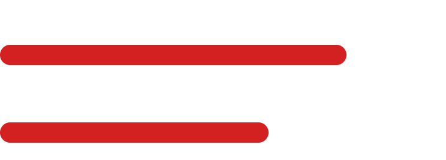

En cliquant dessus, vous apprendrez leurs origines, leurs bienfaits et leurs conséquences.


Le quinoa est un des aliments favoris des consommateurs healthy.
L’augmentation de sa demande de près de 50% depuis le début de cette mode a provoqué un boom de production en quelques années, une forte croissance de la valeur du quinoa et une multiplication du nombre de producteurs.
90%
de la production mondiale vient du
PÉROU et BOLIVIE
Les exportations ont doublé en à peine deux ans.
230 millions de tonnes produites par an.
Bienfaits

Conséquences

Le soja est une graine très consommée en France et dans le monde entier. La mode healthy a participé à la croissance de sa production.
Cependant, manger cet aliment, s’il n’est pas fermenté et cuisiné, peut être nocif pour l’Homme : le lait de soja peut provoquer des dérèglements hormonaux et manger du soja non-fermenté peut provoquer des maladies graves(Alzheimer, cancer de la Thyroïde, déficiences organiques).
De plus, la production d’huile de soja nécessite l’utilisation de nombreux produits chimiques qui émettent des gaz à effet de serre.
35%
de la production mondiale vient des
ÉTATS-UNIS
70% de la production mondiale de soja sont des OGM
30 millions de tonnes de graines de soja sont produites chaque année sur le globe.
Bienfaits
Conséquences

La grenade est un fruit oublié en France et revenu à la mode en même temps que la tendance Healthy.
La consommation de grenades a triplé en 10 ans : Aujourd'hui, 10 000 tonnes de grenades sont consommées chaque année en France. Mais cette popularisation de la grenade pourrait dans un futur proche devenir un danger pour l'écosystème si la demande explose.
La TURQUIE
est premier producteur de grenades.